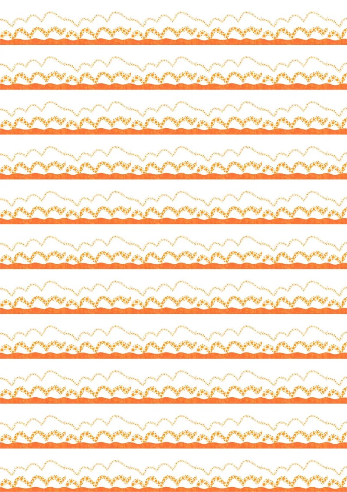
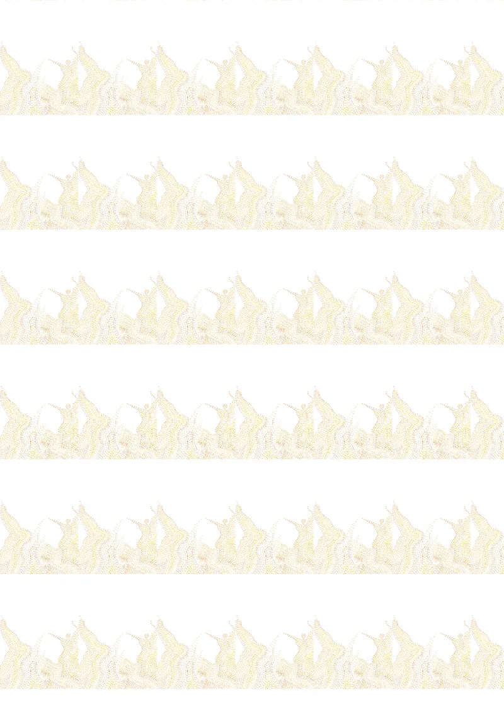
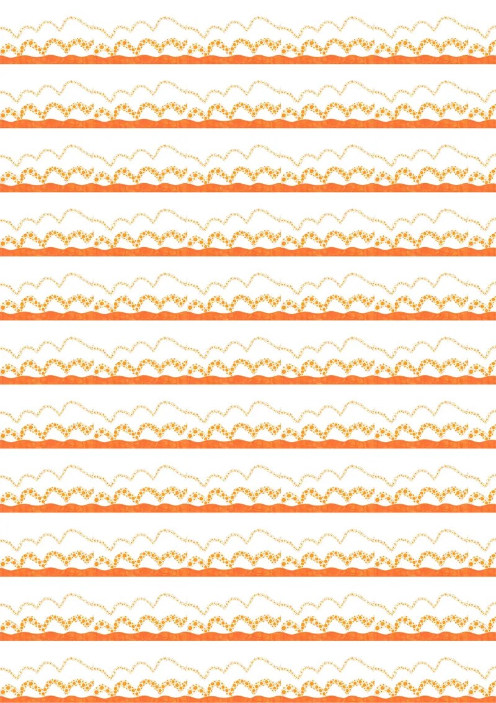
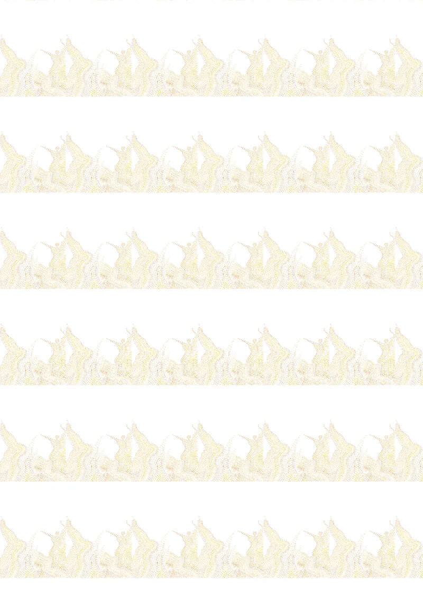
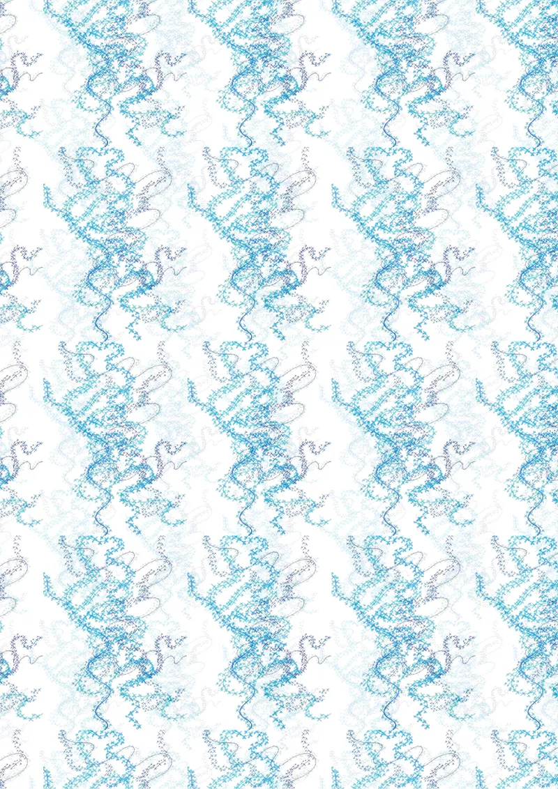
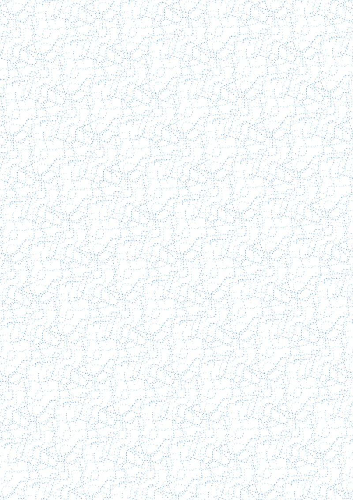
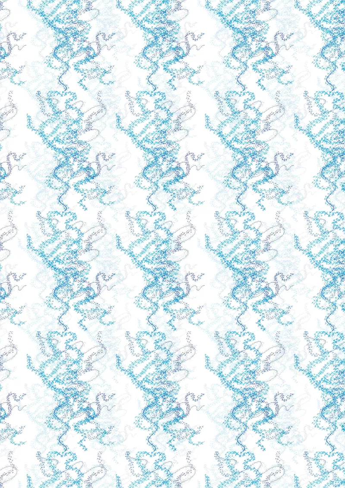
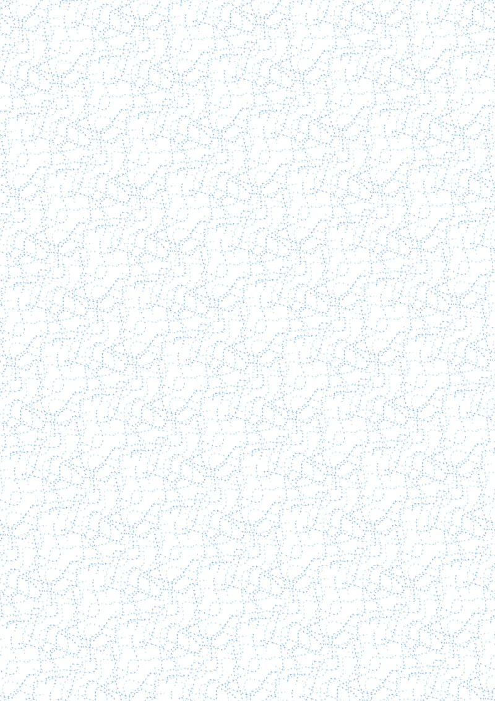

Tee-shirts climatiques
Le motif tremble, évolue et se déploie. J’ai utilisé comme principe graphique la croix bleue pour la neige et le point orange pour le sable, ce qui donne un effet soit de froid, soit de chaud, évoquant des variations de température. L’utilisation du même procédé traduisant la même idée permet d’arriver à deux résultats contrastés, mais complémentaires. En accumulant ces points et ces croix, cela crée un mouvement qui suggère à la fois une tempête et un recouvrement. En adoptant un vocabulaire du changement, ces tee-shirts nous amènent à nous interroger sur les différents événements climatiques récents.
 



 


